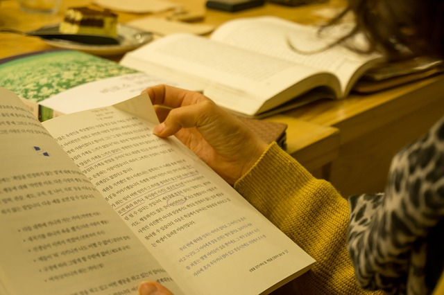
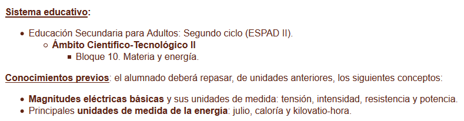
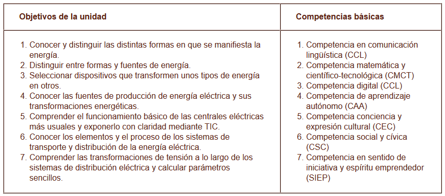
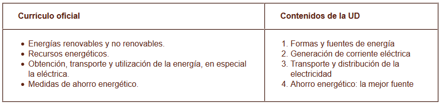

Guía didáctica
UD: "Producción y transporte de energía eléctrica"
En este tercer nivel de concreción curricular de la programación, el profesorado podrá encontrar las orientaciones didácticas necesarias para aplicar la Unidad Didáctica en su ámbito educativo.

Imagen en Pixabay. Dominio público.
Contexto
Objetivos
Los objetivos de área del Ámbito Científico-Tecnológico se encuentran recogidos en el borrador de la Orden que establece la ordenación y el currículo de la ESPAD en Andalucía, en su Anexo I, por lo que no insistiremos en ellos y nos limitaremos a relacionar en este documento la relación entre las Competencias Básicas a desarrollar en el alumnado y los Contenidos de nuestra unidad didáctica:

Contenidos
En este caso relacionamos los contenidos oficiales de la mencionada normativa con los que hemos incluido en la unidad, con el fin de mostrar que estos últimos cubren las expectativas de los primeros:

Metodología
En nuestro caso exponemos las estrategias metodológicas correspondientes a la enseñanza para adultos, tanto a distancia como semipresencial, basadas en el aprendizaje por tareas o proyectos:

Criterios de evaluación
Describimos a continuación los criterios de evaluación y estándares de aprendizaje evaluables correspondientes a nuestra unidad didáctica:

Atención a la diversidad
Revisamos en este punto las medidas previstas y más usuales de atención a esta posible diversidad del alumnado, para la metodología específica de la educación a distancia y semipresencial de adultos:

Obra publicada con Licencia Creative Commons Reconocimiento Compartir igual 4.0